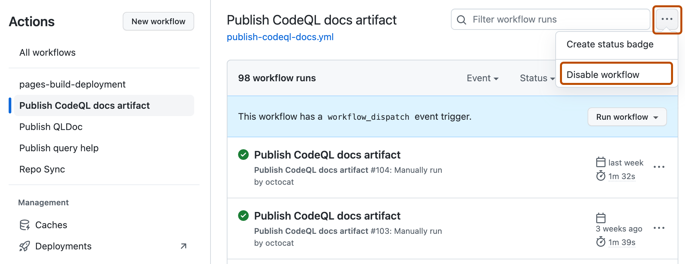
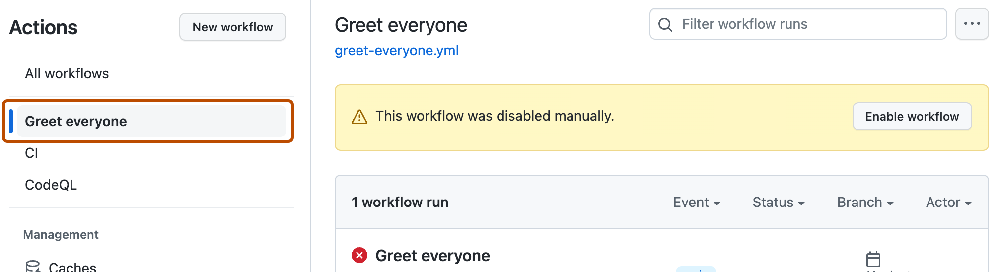

-
On GitHub, navigate to the main page of the repository.
-
Under your repository name, click Actions.

-
In the left sidebar, click the workflow you want to disable.
-
Click to display a dropdown menu and click Disable workflow.

You can disable and re-enable a workflow using the GitHub UI, the REST API, or GitHub CLI.
Disabling a workflow allows you to stop a workflow from being triggered without having to delete the file from the repo. You can easily re-enable the workflow again on GitHub.
Temporarily disabling a workflow can be useful in many scenarios. These are a few examples where disabling a workflow might be helpful:
Warning
To prevent unnecessary workflow runs, scheduled workflows may be disabled automatically. When a public repository is forked, scheduled workflows are disabled by default. In a public repository, scheduled workflows are automatically disabled when no repository activity has occurred in 60 days.
You can also disable and enable a workflow using the REST API. For more information, see REST API endpoints for workflows.
On GitHub, navigate to the main page of the repository.
Under your repository name, click Actions.
In the left sidebar, click the workflow you want to disable.
Click to display a dropdown menu and click Disable workflow.

Note
To learn more about GitHub CLI, see About GitHub CLI.
To disable a workflow, use the workflow disable subcommand. Replace workflow with either the name, ID, or file name of the workflow you want to disable. For example, "Link Checker", 1234567, or "link-check-test.yml". If you don't specify a workflow, GitHub CLI returns an interactive menu for you to choose a workflow.
gh workflow disable WORKFLOW
You can re-enable a workflow that was previously disabled.
On GitHub, navigate to the main page of the repository.
Under your repository name, click Actions.
In the left sidebar, click the workflow you want to enable.

Click Enable workflow.
To enable a workflow, use the workflow enable subcommand. Replace workflow with either the name, ID, or file name of the workflow you want to enable. For example, "Link Checker", 1234567, or "link-check-test.yml". If you don't specify a workflow, GitHub CLI returns an interactive menu for you to choose a workflow.
gh workflow enable WORKFLOW